凡事都有第一次
昨天比較晚睡，看百年孤寂看得捨不得把書闔起來，所以早上有點賴床，七點才出發騎車。
寶雞是一個長方形的城市，所以我今天從由東往西將它走過一回。
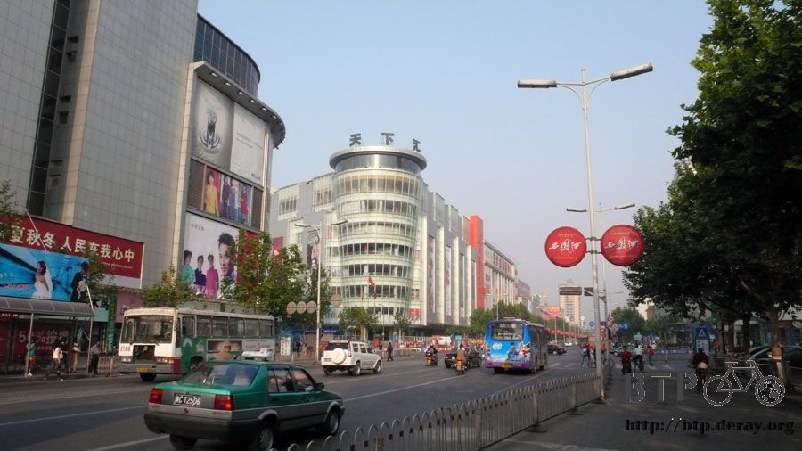
八點快要離開寶雞的時候，聽到很熟悉的音樂聲從喇叭播出來。
『伸展運動，一～二～三～四～』這不是我小學的時候做的國民健康操嗎？
連音調和口令都一模一樣呀！停下車來看裡面的小學生做著令人懷念的動作，
轉頭看了一下校名，讓我笑得很開心，這間是『陝西省寶雞氮肥廠子校』XD
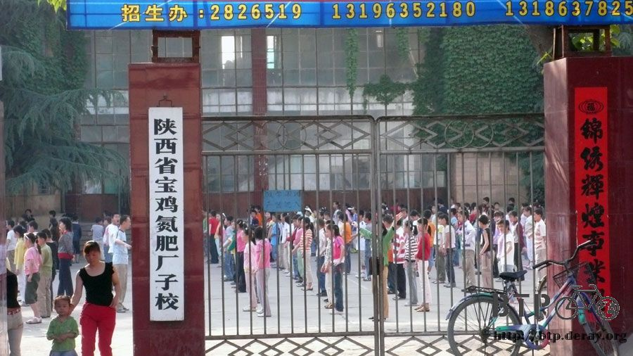
為了尋找往天水的路，還不小心爬了一座小山，
反正無傷大雅，因為今天要爬一整天的山，不差這一座。
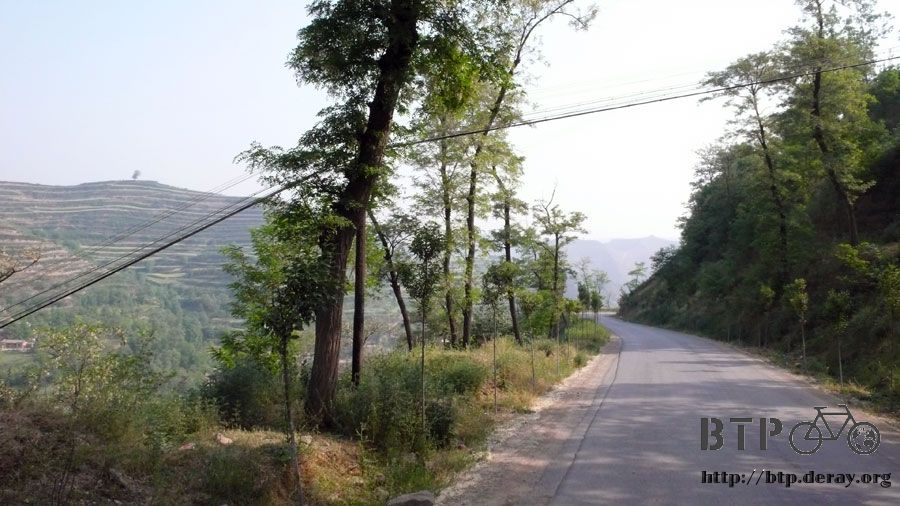
寶雞往天水的路上，大多是在山谷間開闢的路，所以比較少需要上上下下的爬坡，
可是偶爾還是要來一下意思意思。
今天是這次旅行以來第一次穿越隧道，有點擔心GPS在裡面收不到訊號，到時候軌跡會不會整個亂跑~_~
還好落腳之後看了一下，只有一個地方稍微跑掉，整體來說還算蠻精準的。
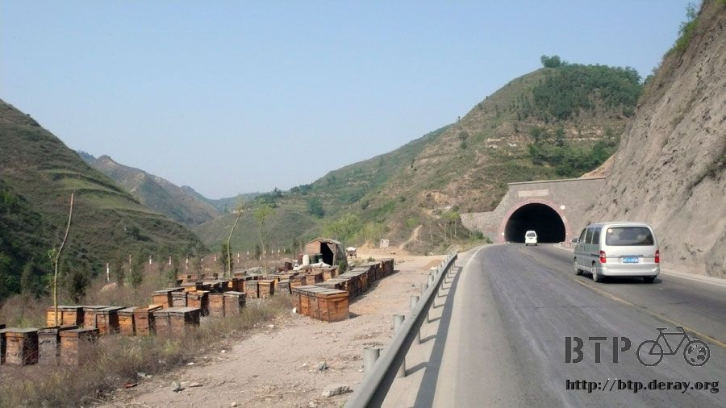
這邊的隧道有點恐怖，長度大概都是1~2公里左右，也有長一點的，可是裡面都不怎麼開燈，
或是只開很暗很黃的那種小燈，這對開車的人來說影響不大，因為他們有車頭燈可以照明，
但是騎自行車還真怕遇到這種隧道，在裡面烏漆抹黑的，一來怕自己摔倒，二來怕被後面的汽車追撞。
進入隧道前，先將遮陽帽拿下來，太陽眼鏡換成一般眼鏡，不然在裡面會跟瞎子一樣。
然後把車尾的紅色警示燈開啟成閃爍模式，接著打開小多前面的照明燈。
多虧小多有內建花鼓發電的機關，只要開關打開，然後騎車的時候，就會自己發電讓車頭燈照明。
這樣就不用擔心電池沒電的問題，而且鹵素燈泡的照明也很足夠。
好加在這一段的汽車都不多，(多的是卡車），車流量不大，所以安安穩穩的通過隧道還不算難事。
一天下來大概穿過了六、七個隧道。
一出第一次遇到的隧道，又發生了這次旅行的第一次，爆胎。
因為道路在施工，所以路很爛，或是只有便道可以走，看起來應該沒什麼問題，可是一騎就爆胎了。
中獎的是前輪，看了軟趴趴無力的輪胎，真是心疼，將車子從大太陽底下牽到旁邊的十五分局，
借個遮陽的地方準備換內胎。

先卸下前面掛載的三個背包，然後拆下前輪，拿出工具和備用內胎，開始動手換內胎。
好久沒有自己換內胎了，從環法之後，也沒什麼機會可以自己動手來，再不爆胎一下，都快忘了要怎麼換了。
戳破內胎的是碎玻璃，一路從外胎鑽到裡面去，從外表看不出什麼端倪，只是一個很小的洞而已。
為了把玻璃碎片取出來，還得用手扳開外胎，然後用小鑷子一點一點的夾出碎玻璃才行。
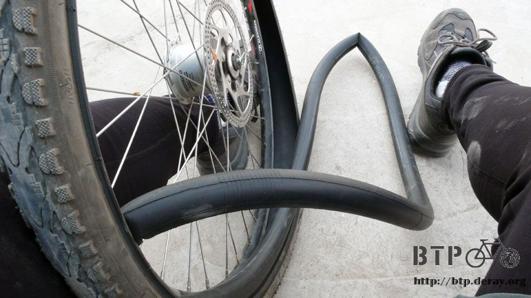
邊動手換的時候，十五分局的人就慢慢圍過來，看我在這邊手忙腳亂。
原來這邊就是道路施工的單位，我說我就是在前面那個路很爛的便道爆胎了，麻煩你們去修一下路吧。
因為目前正在施工新的高速公路，叫做寶天高速，也就是從寶雞通到天水的。
明年才會完工，所以很多國道的部分也受到施工的影響，路變得爛爛的。
大概花了半小時的功夫，一邊跟十五分局的人聊天，一邊把內胎換好，臨走前還請他們將我們水壺裝滿。
今天又是個大太陽的天氣，遮陽帽從早上開始就沒離開過我的頭上，水也消耗的特別兇，身上更是汗濕一片。

沿著山谷騎車，路旁的商店明顯少了很多，城鎮更是稀疏，只有零星的幾個餐廳和修車廠沿著道路做生意。
中午就隨便找一間看順眼的小店吃飯，點了半斤水餃，這次有30顆之多~_~
吃飯的時候，男主人原來就是寶天高速的施工人員之一，這真是個難做的工程。
為了讓路可以直直的開，所以在河川上面用高架的方式鋪路，遇到山擋路就開隧道，不知得做多久才能完工。
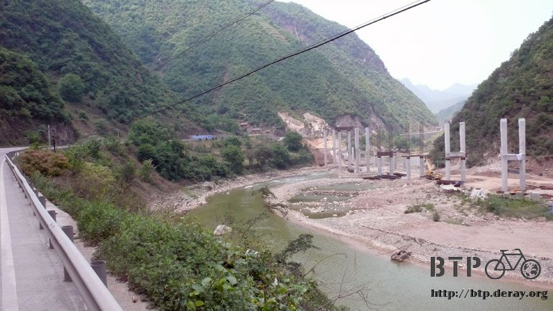
吃餃子吃到一半，傳來好大一聲『碰！』
把我整個人都嚇傻了，可是男主人好像沒聽到一樣，問了一下那聲響是怎麼回事？
原來是在炸山做隧道，把碎石清出來。
哇哩，我還得在旁邊騎車耶，一邊騎車，一邊有人在施工，還用火藥炸山，這樣會不會很危險呀？
『沒事～沒事～』男主人抽根煙輕鬆的說，可那爆炸的聲響還在山谷間迴盪著呢。
吃完飯後沒多久，就穿過了陝西省和甘肅省的省界，簡單一個牌子，一個標語，我又騎過一個省份了。
今天到天水大約有180公里，不想太拼命，所以就分成兩天走比較輕鬆。
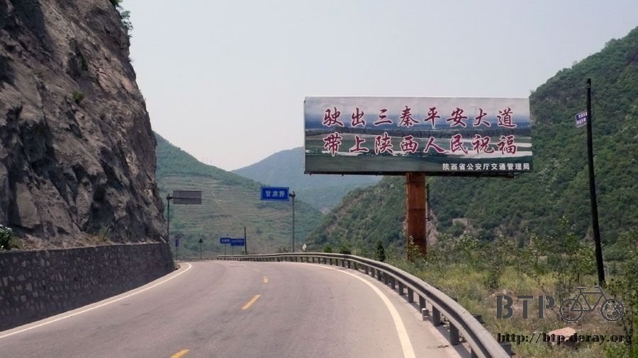
到甘肅後，再隨意的騎段路，下午三四點就可以準備找地方休息了，睡飽一點明天繼續騎。
下午三點半，就在路邊的小飯館裡住下了，飯館是一對夫妻和一個兒子開的。
這裡的地名叫做地庄，真是一個樸素的名字，以這樣的旅館分佈來看，
我想中國地區應該都還用不到帳棚，因為處處都有地方可以住店。
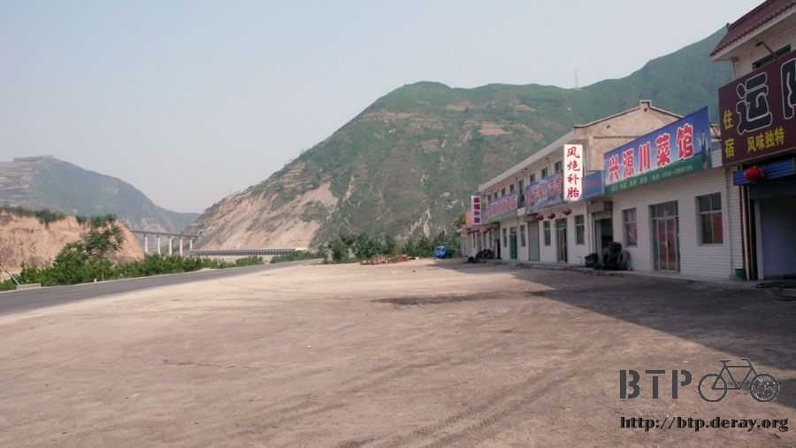
在這住一晚上只要十塊錢，而且他們門口的風很涼快，
提了一桶清涼的井水，把身體擦洗過，然後把身上穿的騎車服也意思意思洗一洗，
拿到二樓頂，婆婆拿了一根刷油漆的竿子讓曬衣服。
今天太陽好大，而且這邊風很大，衣服曬著，一個小時就乾了。
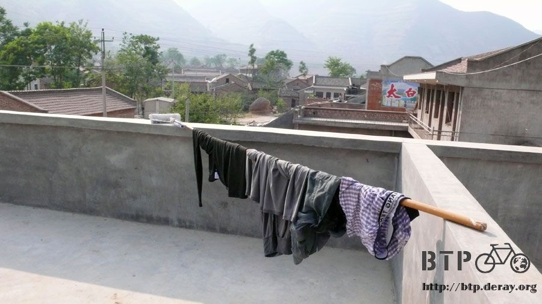
在這點了碗燴麵吃，我以為下廚的會是婆婆，但居然是兒子掌廚。
而且味道出乎意料的美味，燴麵裡有青椒、高麗菜、豆腐、番茄和肉絲，配上一片一片的手工麵，
湯則是香辣中帶點酸甜，不油不膩。
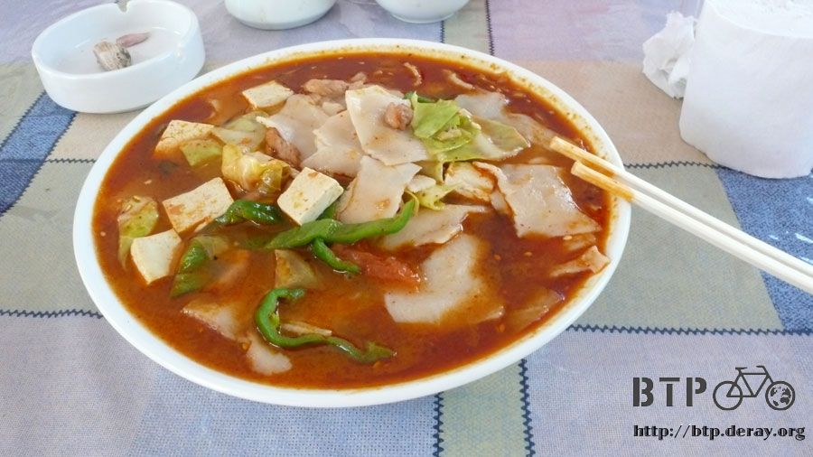
原來兒子之前在寶雞市學過煮菜的手藝，也曾經過去北京的餐廳打工一年磨練，
所以煮東西超好吃的！我一誇獎他就說『沒有，這味道還不太行。』，很謙虛。
學他們拉張板凳坐在店門口，吹著又大又涼的風，這時候就不用管他是順風還是逆風，吹起來會涼就好了。
老闆幫我冰了一瓶啤酒，趁涼喝，一邊欣賞這邊漂亮的山勢。
騎車的時候要注意路況，真的要好好看風景的話，要麻就停下車來欣賞，要麻就等著摔車。
這邊是屋子後頭看到的景色，這些山都是可以爬上去的，上面一定很漂亮吧。
左下角那個小屋子，是衛生間，那邊味道很嗆XD
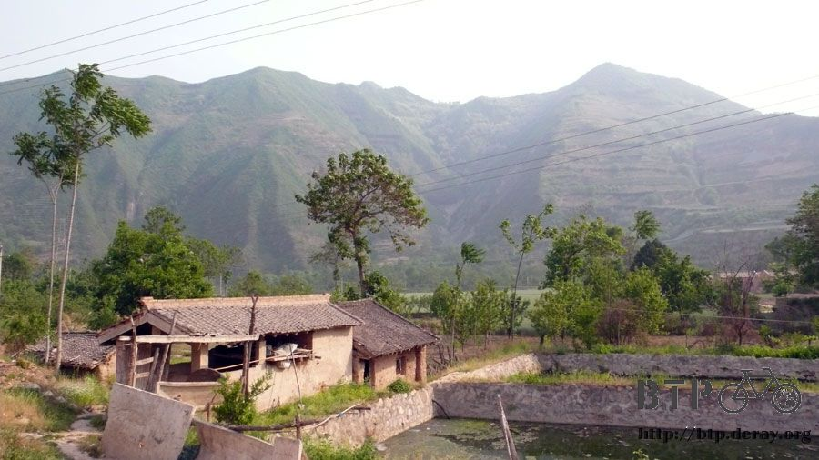
喝完一瓶啤酒，又請老闆冰了一瓶，等晚一點再請兒子炒個什麼好吃的菜來下酒(流口水)
繼續閱讀：5.10 冰雨
中國-人民幣－ 1：4.3 台幣
5.9 |
總計：41元 |
午餐半斤餃子5元、冰棒四隻2元、晚餐燴麵4元、紅燒肥腸16元、啤酒兩瓶4元、住店10元 |
|